AnyPortrait > Manual > Generating Meshes Automatically
Generating Meshes Automatically
1.1.0
It is always a good story to automatically take over the work.
With the ability to automatically generate meshes added to v1.1.0, you will be able to save a considerable amount of time.
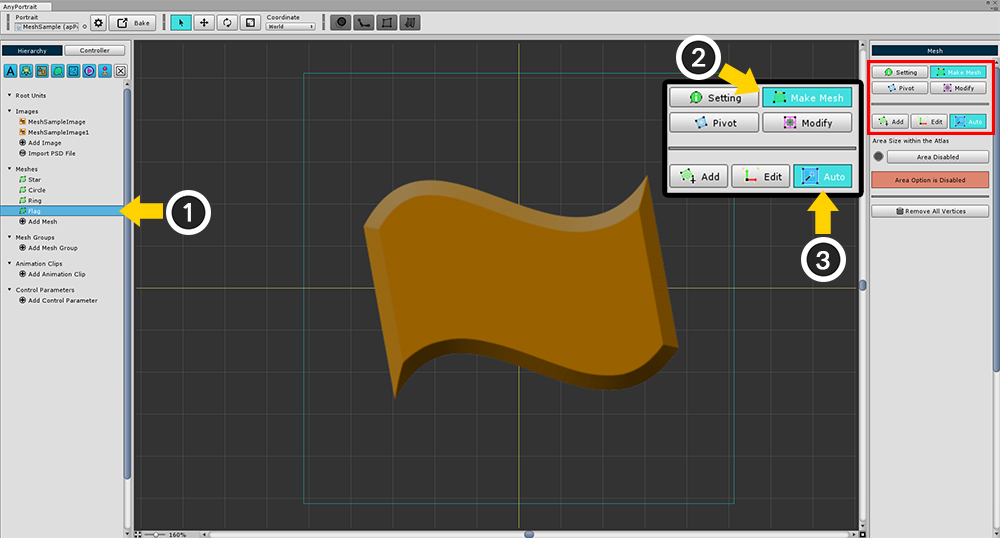
(1) Select the mesh.
(2) Select the Make Mesh tab.
(3) Select the Auto tab.
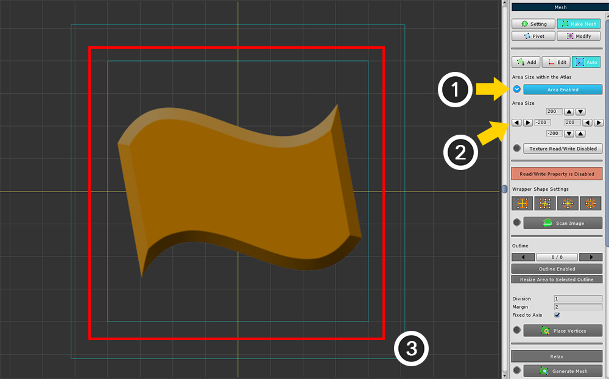
(1) Enable Area.
This option is enabled if you have created a mesh from a PSD file or an existing region has been set.
(2) Set the size of area.
(3) The area appears in the workspace.
Here is the automatic mesh generation UI.
Each function must be executed in order.
The buttons that must be pressed are the Blue Check icon (V), and the Blue Star icon in the right image.
1. Area : Turns the area on or off. (necessary)
2. Area Size : Set the area size.
3. Texture Read/Write : Texture read / write setting. This feature should be turned on to read the texture's color and generate meshes, but turning it off for optimization is recommended. (necessary)
4. Wrapper Shape : This is the type of Wrapper that determines the shape of the mesh.
5. Scan Image : Read the texture and create a new Wrapper. (necessary)
6. Outline selection tools : You can select and exclude outlines.
7. Internal vertex placement options : These are the options for placing vertices.
- Division : Determines how many vertices to generate inside the Wrapper.
- Margin : The size of the margin that the mesh expands.
- Fixed to Axis : Determines whether the direction of movement of vertices depends on the Wrapper when executing Relax
8. Place Vertices : Place vertices according to the Wrapper. (necessary)
9. Relax : Unfold vertices and relocate them to match the shape of the image.
10. Generate Mesh : Generates a mesh based on deployed vertices. (necessary)

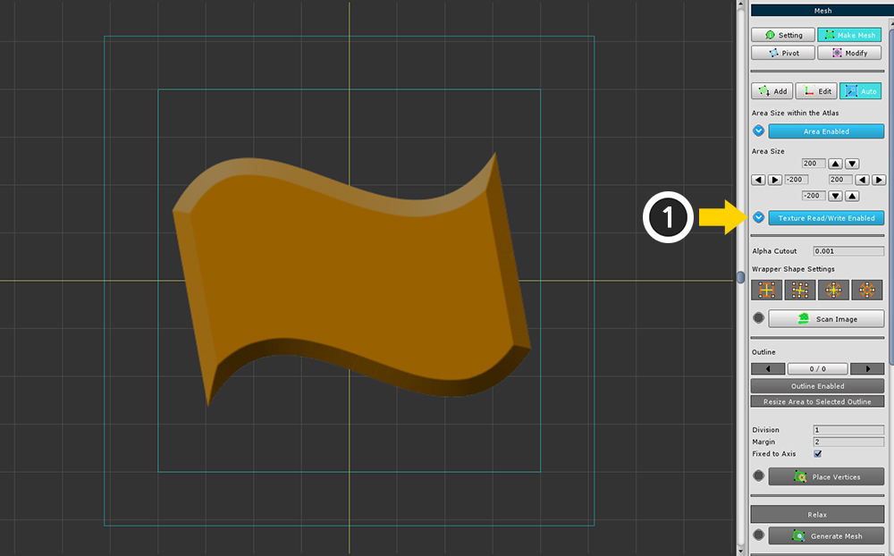
(1) Press Texture Read / Write button to change to Enabled state.
Note :
This setting should be changed back to Disabled at the end of every operation.

(1) Press the Scan Image button to read the texture and create a Wrapper.

Modify the Wrapper appropriately according to the shape of the image.
Note :
Wrapper edits are not reversible and are not saved.
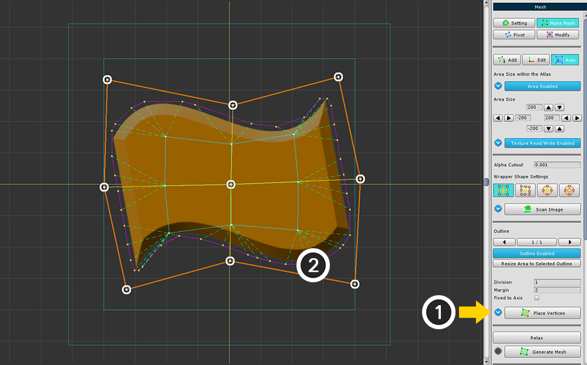
(1) Click the Place Vertices button to create vertices inside the Wrapper.
(2) The generated vertices can be checked in the workspace.
The vertices at this stage are temporarily generated data. The actual vertex is not yet created.

(1) Change the Division value, and (2) press the Place Vertices button to create more vertices inside.
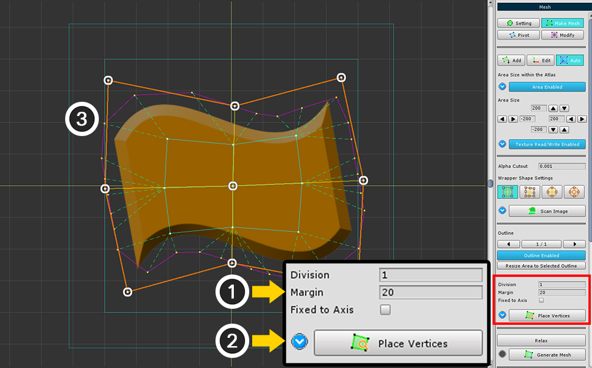
(1) Change the Margin value, and (2) press the Place Vertices button to expand the margin of the image from the outline.
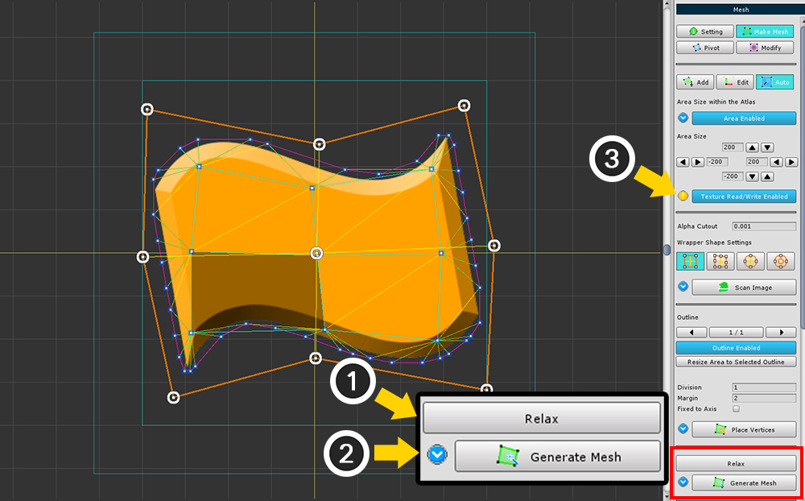
(1) Press the Relax button to move the vertices inside. Press several times until the appropriate shape appears.
(2) Press the Generate Mesh button to create a mesh.

(1) Select the Edit tab and (2) edit the incorrect vertex.
If you have made all the changes, press the Make Polygons button to update.
Solution for cases where multiple images are included in a area

Sometimes a rectangle contains part of another images.
At this point, you can decide which image you want to make as a mesh.
When the images are recognized, Outlines are created.
(1) If two or more outlines are created, you can select another outline with the arrow buttons.
The selected Outline is displayed as a yellow segment.

(1) Select the Outline you want to exclude.
(2) Press the Outline Enabled button to switch to the Disabled state.
Outlines that are excluded from the workspace are grayed out.
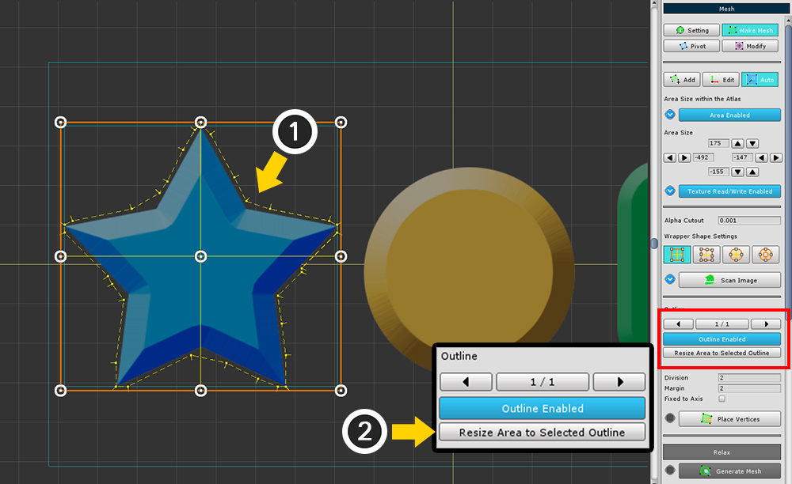
You can reduce the size of the area to match the outline.
(1) Select the Outline.
(2) Click the Resize Area to Selected Outline button to reduce the area.
Wrappers of various shapes


The second Wrapper is a Complex Rectangular Wrapper tool.
By modifying the value of Point Count X, Y, you can add control points to the Wrapper, and you can create meshes for even slightly more complex images.
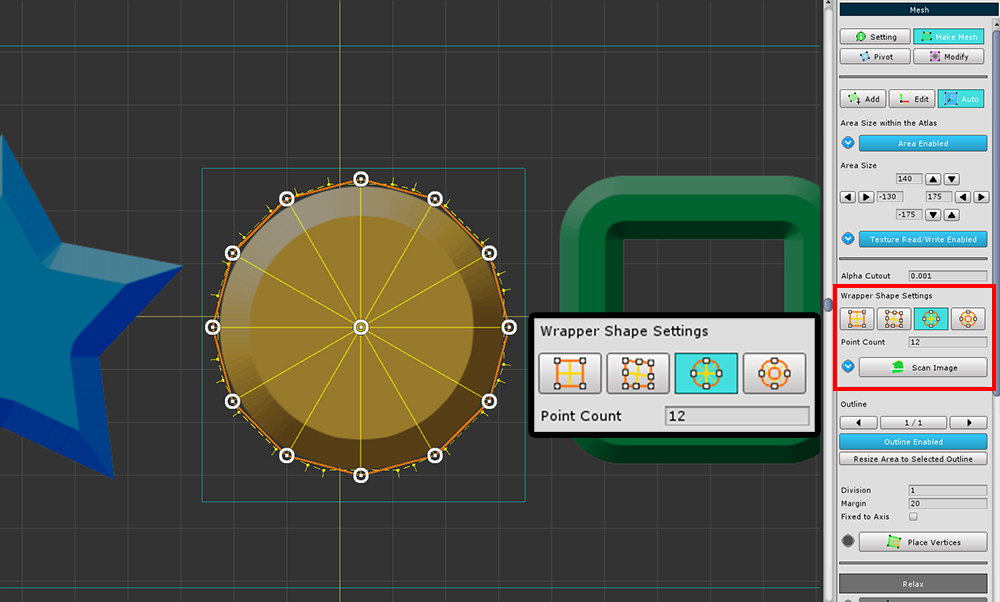
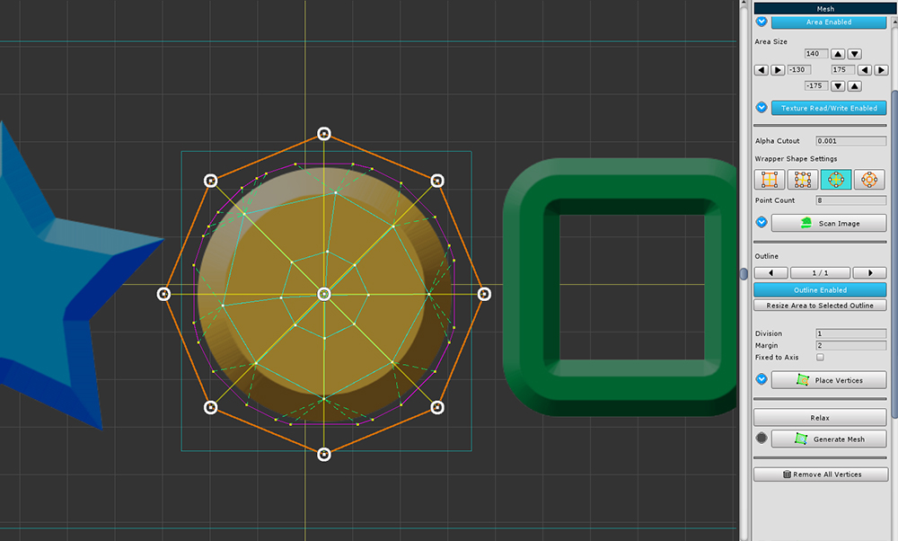
The third Wrapper is a Circular Wrapper tool.
You can modify the value of Point Count to create more partitioned control points.
It is characterized by a radial mesh from the center.


The fourth Wrapper is a Ring-shaped Wrapper tool.
You can modify the value of Point Count to create more partitioned control points.
This is appropriate if you have an empty space in the image.
Fixed to Axis option
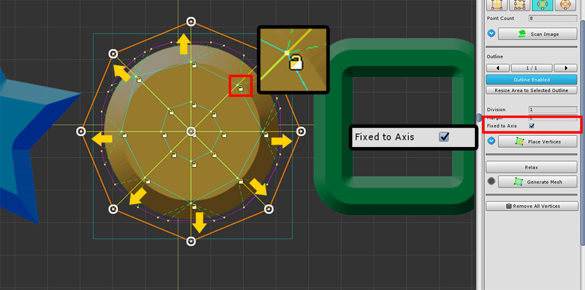
Fixed to Axis option is a setting related to the Relax function.
When Relaxing, it restricts it to move only in the direction of the control point of the Wrapper connected with the vertex.
Therefore, the shape of the inner vertex is relatively less deformed.
When this option is turned on, the internal vertices are added with a Red or Yellow Lock icon.
The vertices with the Red Lock icon will not move.
The vertices with a Yellow Lock icon moves only in a certain direction.
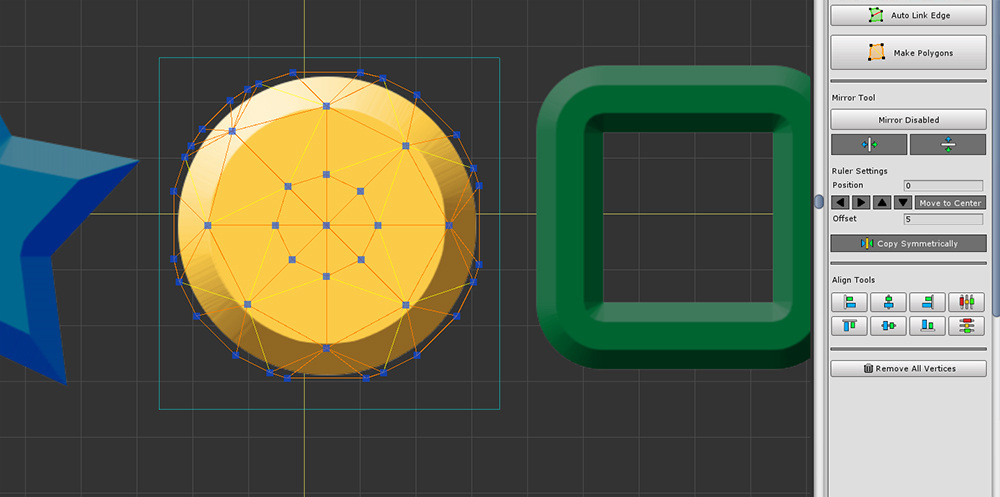
Relax does not significantly change the placement of vertices.